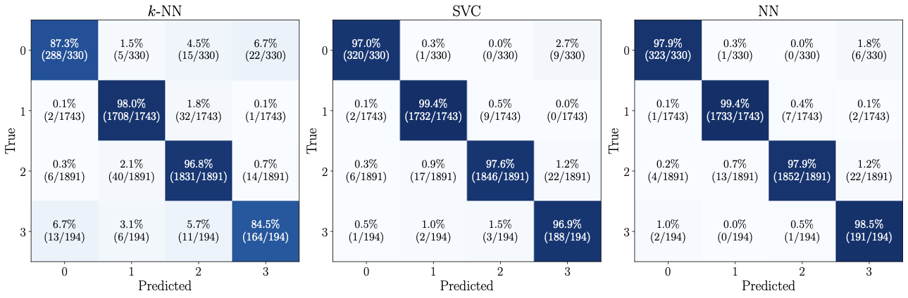
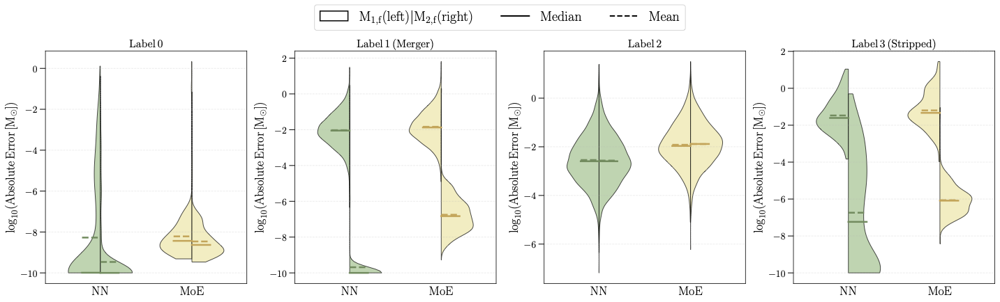

Stellar collisions are common in dense clusters and galactic nuclei, and they matter for everything from blue stragglers to the formation of massive black holes. Analytic fitting formulae that describe the likely outcome of a collision exist, but they do not generalize well across encounter energies or stellar evolutionary phases.
Smoothed particle hydrodynamics (SPH) can resolve the internal structure of colliding stars, yet even modest-resolution runs are too expensive to call on the fly inside an N-body calculation that may produce thousands of collisions. To solve this, we built collAIder, an open-source Python package that contains a machine learning model trained on a large set of SPH simulations of stellar collisions to predict the outcome of a stellar collision.
In González Prieto et al. (2026) we assembled a grid of 27,720 StarSmasher SPH calculations of main-sequence star collisions. The grid spans stellar mass, age (from zero-age to terminal-age main sequence), relative velocity, and impact parameter, with stellar structures drawn from MESA evolutionary models.
We trained and compared nearest neighbors, support vector machines, and neural networks on two tasks: classifying the collision outcome, and regressing the final remnant masses. Neural networks reach a classification balanced accuracy of 98.4%, with relative errors of 0.11% and 0.15% for the two remnant masses. In the figure below, we show the performance of each method on the classification task in a confusion matrix.

We also explore a combined architecture using a Mixture of Experts model, which achieves a comparable classification balanced accuracy of 98.5%, with relative errors of 0.27% and 0.75% for the two remnant masses.
